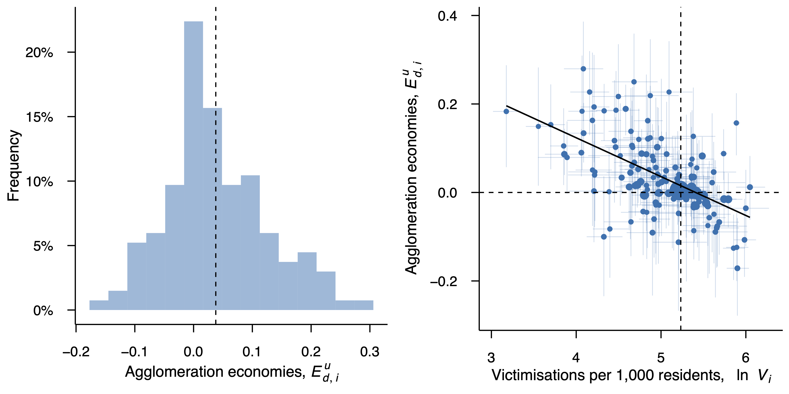

Abstract
We study the effects of crime and agglomeration on urban amenity using data for 134 locations in New Zealand and report three key findings. First, the negative effects of crime operate mostly via rents, with elasticities that range from −0.15 to −0.44. Accounting for endogeneity leads to larger elasticities in some specifications, possibly due to sorting effects. Second, crime has negative effects on the value of urban amenities, with elasticities that range from approximately −0.03 to −0.06 for firms and −0.02 to −0.09 for workers. Using reduced-form models, we show that these effects imply an elasticity of population with respect to crime of −0.04 to −0.10. Third, controlling for crime causes estimates of agglomeration economies to increase by approximately 0.01–0.02 points, on average. Our findings confirm that crime is an important urban congestion cost that erodes productivity and well-being.
The effect of crime on agglomeration economies in consumption
An important finding of our paper is that controlling for crime causes our estimates of agglomeration economies in production and consumption, \(E_d^y\) and \(E_d^u\), to increase on average by 0.011 and 0.021 points, respectively. The magnitude of this increase is similar to that reported in (cf. Table 2 Donovan et al. 2022) when controlling for commuting costs, which implies that the negative effects of crime on agglomeration economies may be of a similar order of magnitude to those for road congestion—at least in the New Zealand context. Although the differences in our estimates of average agglomeration economies when controlling for crime are economically significant, they are not statistically significant. Nonetheless, we can draw on other evidence to confirm the effect of crime on agglomeration economies. The figure below illustrates this.

Citation
@article{donovan2024urban,
title={An urban overhead? Crime, agglomeration, and amenity},
author={Donovan, Stuart and de Graaff, Thomas and de Groot, Henri LF and Schiff, Aaron},
journal={Journal of Housing Economics},
pages={101994},
year={2024},
publisher={Elsevier}
}